บทที่ 2 · แบบจำลองความสัมพันธ์ระหว่างข้อมูล (ER Model)
เอนทิตี แอตทริบิวต์ ความสัมพันธ์ ภาวะความสัมพันธ์ ขั้นตอนการเขียนแผนภาพ ER จากโจทย์ — เรียนคู่กันทั้งแบบ Chen และ Crow's Foot พร้อม ER แบบข้อความ (Mermaid)
- อธิบายความหมายและความสำคัญของแบบจำลองข้อมูลได้
- อธิบายสัญลักษณ์ในแผนภาพ ER ทั้งแบบเชน (Chen) และแบบตีนกา (Crow's Foot) และแปลงระหว่างสองแบบได้
- แยกแยะเอนทิตีปกติกับเอนทิตีอ่อนแอ และจำแนกประเภทแอตทริบิวต์ได้
- ระบุระดับความสัมพันธ์และภาวะความสัมพันธ์ (1:1, 1:M, M:N) ได้
- เขียนแผนภาพ ER จากโจทย์ และตรวจหาข้อผิดพลาดที่พบบ่อยได้
- เขียน ER เป็นข้อความด้วย Mermaid ได้
- 2.1 ความหมายและความสำคัญของแบบจำลองข้อมูล
- 2.2 สัญลักษณ์พื้นฐานของแผนภาพ ER — Chen และ Crow's Foot
- 2.3 เอนทิตี
- 2.4 แอตทริบิวต์
- 2.5 ความสัมพันธ์
- 2.6 ขั้นตอนการเขียนแผนภาพ ER จากโจทย์
- 2.7 กรณีศึกษา: ระบบลงทะเบียนเรียน
- 2.8 ข้อผิดพลาดที่พบบ่อยในการเขียนแผนภาพ ER
- 2.9 สรุปเปรียบเทียบ Chen กับ Crow's Foot และการเขียน ER เป็นข้อความ
2.1 ความหมายและความสำคัญของแบบจำลองข้อมูล
ก่อนสร้างตารางจริง ต้องเข้าใจก่อนว่าองค์กรต้องเก็บข้อมูลอะไร และข้อมูลสัมพันธ์กันอย่างไร การออกแบบนิยมแบ่งแบบจำลองเป็น 3 ระดับ
ประโยชน์ของการเขียนแบบจำลองก่อน: ผู้พัฒนากับผู้ใช้สื่อสารตรงกัน · พบความต้องการที่ขาดหายตั้งแต่ต้น · ลดต้นทุนแก้ไขภายหลัง · ได้ตารางที่ซ้ำซ้อนต่ำ
2.2 สัญลักษณ์พื้นฐานของแผนภาพ ER — Chen และ Crow's Foot
แผนภาพ ER (Entity Relationship Diagram) มี 2 รูปแบบหลักที่ต้องอ่านและเขียนได้ทั้งคู่ — แบบเชน (Chen, 1976) ของ Peter Chen ผู้เสนอแบบจำลอง ER เหมาะกับการคิดระดับแนวคิดและสื่อสารกับผู้ใช้ และแบบตีนกา (Crow's Foot) ที่ Gordon Everest เสนอในปีเดียวกัน ซึ่งเป็นแบบที่เอกสารออกแบบและเครื่องมือในงานจริงใช้มากที่สุด — บทนี้จึงแสดงทั้งสองแบบคู่กันในทุกหัวข้อและทุกตัวอย่าง (ซ้าย = Chen, ขวา = Crow's Foot)
| ความหมาย | แบบเชน (Chen) | แบบตีนกา (Crow's Foot) |
|---|---|---|
| Entity — สิ่งที่ต้องเก็บข้อมูล | ▭ สี่เหลี่ยมผืนผ้า | กล่องที่มีแถบหัวเป็นชื่อเอนทิตี และรายการแอตทริบิวต์อยู่ข้างใน |
| Weak Entity — ต้องอาศัยเอนทิตีอื่นจึงระบุตัวตนได้ | ▭▭ สี่เหลี่ยมสองชั้น | กล่องปกติ แต่ PK มีคีย์ของเจ้าของรวมอยู่ (PK,FK) และเชื่อมกับเจ้าของด้วยเส้นทึบ |
| Attribute — คุณสมบัติของเอนทิตี | ⬭ วงรี | 1 แถวในกล่อง |
| Key Attribute — ระบุตัวตนได้ | ⬭ วงรี + ขีดเส้นใต้ | PK หน้าชื่อ (ขีดเส้นใต้) |
| Multivalued — มีได้หลายค่า | ◎ วงรีสองชั้น | แยกเป็นเอนทิตีใหม่ เชื่อมแบบ 1:M |
| Derived — คำนวณจากแอตทริบิวต์อื่น | ⬭ วงรีเส้นประ | / นำหน้าชื่อ เช่น /age (หรือไม่วาด) |
| Relationship — ความเกี่ยวข้องระหว่างเอนทิตี | ◇ ข้าวหลามตัด | เส้นตรงเชื่อมกล่อง เขียนชื่อ (คำกริยา) บนเส้น |
| Cardinality — ค่าสูงสุด | 1, M, N เขียนบนเส้น | ปลายเส้น: ขีด | = หนึ่ง · ตีนกา < = หลาย |
| Participation — ค่าต่ำสุด (บังคับหรือไม่) | ═ เส้นคู่ = ต้องมีส่วนร่วมทุกราย (Total) | ปลายเส้นด้านนอก: ขีด | = บังคับ (≥ 1) · วงกลม o = ไม่บังคับ (≥ 0) |
2.2.1 สัญลักษณ์ปลายเส้นของ Crow's Foot
ปลายเส้นแต่ละด้านมี 2 สัญลักษณ์ซ้อนกัน — ตัวชิดกล่องคือค่าสูงสุด (หนึ่งหรือหลาย) ตัวที่อยู่ห่างออกมาคือค่าต่ำสุด (ศูนย์หรือหนึ่ง)
อ่านจากเอนทิตีหนึ่ง ข้ามเส้นไปดูสัญลักษณ์ที่ปลายฝั่งตรงข้าม — เช่น LECTURER ||——o< SECTION อ่านว่า “อาจารย์ 1 คนสอนกลุ่มเรียนได้ ศูนย์หรือหลายกลุ่ม” และอ่านกลับว่า “กลุ่มเรียน 1 กลุ่มมีผู้สอน หนึ่งคนเท่านั้น” — ตรงกับ 1:M ในแบบเชน และบอกค่าต่ำสุดด้วยว่าอาจารย์บางคนไม่ได้สอนก็ได้ (Partial) ขณะที่ทุกกลุ่มเรียนต้องมีผู้สอน (Total — แบบเชนวาดเป็นเส้นคู่)
Chen เขียน 1 / M / N ชิดเอนทิตี และใช้เส้นคู่ระหว่างเอนทิตีกับข้าวหลามตัดเมื่อสมาชิกทุกรายต้องมีส่วนร่วม (Total) เช่น LECTURER —1— ◇teach —N═ SECTION อ่านว่า “อาจารย์ 1 คนสอนได้ N กลุ่ม กลุ่มหนึ่งมีอาจารย์ 1 คน และกลุ่มเรียนทุกกลุ่มต้องมีผู้สอน (เส้นคู่ฝั่ง SECTION)”
⚠️ ค่าสูงสุดอยู่ฝั่งเดียวกัน แต่ค่าต่ำสุดอยู่คนละฝั่ง — N ของ Chen กับตีนกาของ Crow's Foot อยู่ฝั่ง SECTION เหมือนกัน แต่ “กลุ่มเรียนต้องมีผู้สอน” Chen วาดเส้นคู่ฝั่ง SECTION ส่วน Crow's Foot วาดขีด | ฝั่ง LECTURER (LECTURER ||——o< SECTION) เพราะ Crow's Foot อ่านข้ามเส้น
นอกจากแบบเชนยังมี Crow's Foot (แบบที่ใช้มากที่สุดในงานจริง — draw.io, Lucidchart, MySQL Workbench, dbdiagram.io) และ IDEF1X — DBeaver เลือกแสดงได้ทั้งสองแบบ ทุกแบบสื่อความหมายเดียวกัน ต่างแค่รูปแบบการวาด (การเขียน ER เป็นข้อความด้วย Mermaid ดูหัวข้อ 2.9)
2.3 เอนทิตี
เอนทิตี (Entity) คือสิ่งที่องค์กรสนใจเก็บข้อมูล อาจจับต้องได้ (นิสิต อาจารย์) หรือเป็นแนวคิด (รายวิชา การลงทะเบียน) ตั้งชื่อด้วยคำนามเอกพจน์
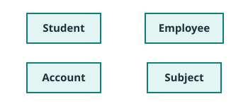
เอนทิตีอ่อนแอ (Weak Entity) ระบุตัวตนด้วยตนเองไม่ได้ ต้องอาศัย เอนทิตีเจ้าของ (Owner Entity) เช่น ที่นั่ง A1 — ทุกโรงภาพยนตร์ก็มี A1 จึงต้องระบุชื่อโรงด้วย
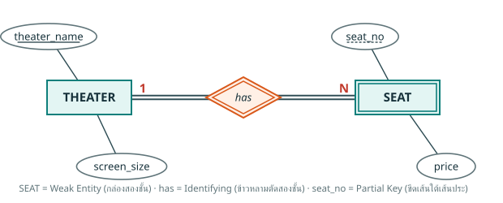
|| (ที่นั่งต้องอยู่ในโรงเดียวเสมอ) ส่วนฝั่ง SEAT เป็น |< (โรงหนึ่งมีอย่างน้อย 1 ที่นั่ง)ถามว่า “ถ้าลบเอนทิตีเจ้าของทิ้ง ข้อมูลนี้ยังมีความหมายอยู่หรือไม่” — ถ้าไม่มีความหมาย แสดงว่าเป็นเอนทิตีอ่อนแอ
จงระบุว่าข้อใดเหมาะเป็นเอนทิตีอ่อนแอ พร้อมระบุเอนทิตีเจ้าของ
(ก) ห้องพักในโรงแรม
(ข) ลูกค้า
(ค) รายการสินค้าในใบสั่งซื้อ
(ง) ผู้อยู่ในอุปการะของพนักงาน (Dependent)
(ก) อ่อนแอ — เจ้าของคือ โรงแรม (ห้อง 101 มีทุกโรงแรม)
(ข) ปกติ
(ค) อ่อนแอ — เจ้าของคือ ใบสั่งซื้อ (รายการที่ 1, 2, 3 ของใบไหน)
(ง) อ่อนแอ — เจ้าของคือ พนักงาน (ถ้าพนักงานลาออก ข้อมูลผู้อยู่ในอุปการะก็ไม่มีความหมาย)
Crow's Foot: วาดเป็นกล่องปกติ แต่ PK รวมคีย์ของเจ้าของ เช่น ROOM(PK,FK hotel_id, PK room_no) และเส้น HOTEL ||——|< ROOM
2.4 แอตทริบิวต์
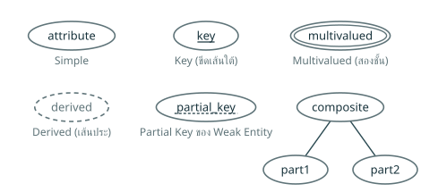
| ประเภท | ความหมาย | ตัวอย่าง | Chen | Crow's Foot |
|---|---|---|---|---|
| Simple | แบ่งย่อยไม่ได้ | เพศ, gpa | วงรี | 1 แถวในกล่อง |
| Key | ค่าไม่ซ้ำ ใช้ระบุตัวตน | stdid, เลขบัตรประชาชน | วงรี + ขีดเส้นใต้ | PK หน้าชื่อ |
| Composite | แบ่งย่อยได้ | ที่อยู่ → บ้านเลขที่ ถนน จังหวัด | วงรีแตกเป็นวงรีย่อย | เขียนแอตทริบิวต์ย่อยเป็นหลายแถว |
| Multivalued | 1 สมาชิกมีหลายค่า | เบอร์โทร, ทักษะ | วงรีสองชั้น | เอนทิตีใหม่ + เส้น 1:M |
| Derived | คำนวณได้ ไม่ต้องเก็บ | อายุ (จาก birthday) | วงรีเส้นประ | /age หรือไม่วาด |
| Nullable | ยอมให้ยังไม่มีค่า | วันที่สำเร็จการศึกษา, เกรดที่ยังไม่ประกาศ | ไม่มีสัญลักษณ์เฉพาะ | ระดับแนวคิดไม่ต้องระบุ — ระดับตรรกะเขียน NULL / NOT NULL ท้ายแถว |
2.4.1 Key Attribute
Chen: ขีดเส้นใต้ชื่อในวงรี · Crow's Foot: เขียน PK หน้าชื่อ และเรียงคีย์ไว้แถวแรกของกล่อง
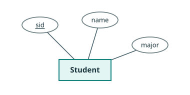
2.4.2 Composite Attribute
Chen: แตกวงรีย่อยออกจากวงรีหลัก · Crow's Foot: ไม่มีแอตทริบิวต์ซ้อน จึงเขียนแอตทริบิวต์ย่อยเรียงเป็นแถวในกล่องแทน (ตรงกับตอนแปลงเป็นตารางในบทที่ 3)
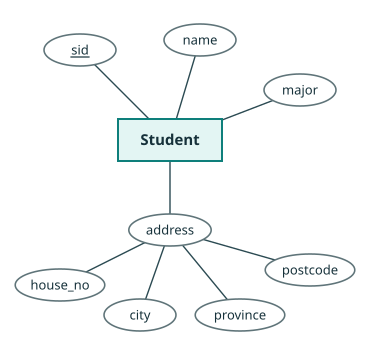
2.4.3 Multivalued Attribute
Chen: วงรีสองชั้น เช่น นิสิต 1 คนมีหลายทักษะ · Crow's Foot: หนึ่งช่องในกล่องเก็บได้ค่าเดียว จึงต้องยกเป็นเอนทิตีใหม่ แล้วเชื่อมแบบ 1:M
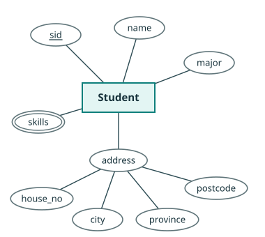
o< แปลว่านิสิตบางคนอาจยังไม่มีทักษะที่บันทึกไว้ห้ามเก็บหลายค่าไว้ในช่องเดียว เช่น phone = '081-1111111, 043-222222' ค้นหาและแก้ไขยาก ผิดหลัก 1NF — วิธีที่ถูกคือแยกเป็นตารางใหม่ (บทที่ 3)
2.4.4 Derived Attribute
Chen: วงรีเส้นประ · Crow's Foot: ใส่ / นำหน้าชื่อ (หรือละไว้ไม่วาด เพราะไม่ได้สร้างเป็นคอลัมน์จริง) เช่น age คำนวณจาก birthday — ถ้าเก็บอายุไว้ต้องแก้ทุกปี ลืมแก้ข้อมูลผิดทันที ในบทที่ 5 เราจะคำนวณอายุด้วย TIMESTAMPDIFF()
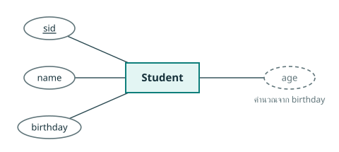
2.4.5 Nullable Attribute
ค่าว่าง (NULL) ไม่ใช่ 0 หรือช่องว่าง แต่หมายถึง “ยังไม่ทราบค่า” — ในฐานข้อมูลกรณีศึกษา มีนิสิตหลายคนที่ยังไม่มี gpa หรือ birthday และแอตทริบิวต์คีย์ห้ามเป็นค่าว่าง — ทั้งสองแบบไม่มีสัญลักษณ์เฉพาะในระดับแนวคิด แต่เมื่อวาด Crow's Foot ระดับตรรกะ (ใกล้ตารางจริง) มักเขียน NULL / NOT NULL หรือชนิดข้อมูลกำกับท้ายแถว
จงจำแนกประเภทแอตทริบิวต์ (อาจมีได้มากกว่า 1 ประเภท)
(ก) เลขประจำตัวประชาชน
(ข) ที่อยู่
(ค) อายุ
(ง) ความสามารถพิเศษ
(จ) วันเกิด
(ฉ) ชื่อ-นามสกุล
(ก) Key / Simple
(ข) Composite
(ค) Derived
(ง) Multivalued
(จ) Simple (อาจเป็น Nullable)
(ฉ) Composite (ชื่อ + นามสกุล)
2.5 ความสัมพันธ์
ความสัมพันธ์ (Relationship) — Chen: สี่เหลี่ยมข้าวหลามตัด · Crow's Foot: เส้นตรงเชื่อมสองกล่อง เขียนชื่อบนเส้น — ทั้งสองแบบตั้งชื่อด้วยคำกริยา เช่น นิสิต ลงทะเบียน กลุ่มเรียน, อาจารย์ สอน กลุ่มเรียน
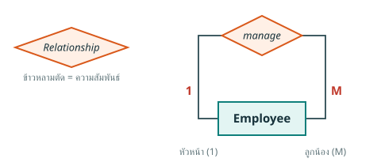
o| = พนักงานมีหัวหน้าได้ไม่เกิน 1 คน (หัวหน้าสูงสุดไม่มี) ปลาย o< = พนักงานเป็นหัวหน้าของคนอื่นได้ 0 ถึงหลายคน2.5.1 ระดับของความสัมพันธ์ (Degree)
- Unary / Recursive — ภายในเอนทิตีเดียว เช่น รายวิชาเป็นวิชาบังคับก่อนของรายวิชาอื่น (คอลัมน์
pre) - Binary — ระหว่าง 2 เอนทิตี (พบมากที่สุด)
- Ternary — ระหว่าง 3 เอนทิตีพร้อมกัน ในทางปฏิบัติมักแปลงเป็น Binary หลายชุด
2.5.2 ภาวะความสัมพันธ์ (Cardinality)
1 : 1 (One-to-One)
พนักงาน 1 คนมีห้องทำงาน 1 ห้อง และห้อง 1 ห้องเป็นของพนักงานคนเดียว
Crow's Foot: EMPLOYEE ||——o| OFFICE
1 : M (One-to-Many)
อาจารย์ 1 คนสอนได้หลายกลุ่มเรียน แต่กลุ่มเรียนหนึ่งมีผู้สอน 1 คน
Crow's Foot: LECTURER ||——o< SECTION
M : N (Many-to-Many)
นิสิต 1 คนลงได้หลายกลุ่มเรียน และกลุ่มเรียนหนึ่งมีนิสิตหลายคน
Crow's Foot: STUDENT >o——o< SECTION
วิธีหาภาวะความสัมพันธ์
ถามทั้งสองฝั่ง: “A 1 ตัว สัมพันธ์กับ B ได้มากที่สุดกี่ตัว?” (ได้ 1 / M ทั้งสองแบบ) — Crow's Foot ถามเพิ่มอีกข้อ: “น้อยที่สุดกี่ตัว — มีได้ 0 ไหม?” (ได้ o หรือ |)
o| ฝั่ง OFFICE — บางคนไม่มีห้อง) · ห้อง 1 ห้องเป็นของพนักงาน หนึ่งคนเท่านั้น (|| ฝั่ง EMPLOYEE)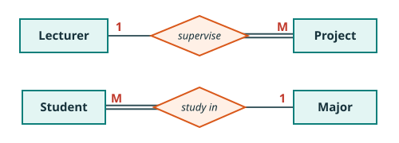
o< ศูนย์ถึงหลายเรื่อง · นิสิต 1 คนสังกัดสาขา || หนึ่งสาขาเท่านั้น ส่วนสาขาหนึ่งมีนิสิตได้ o< หลายคน (สาขาเปิดใหม่อาจยังไม่มีนิสิต)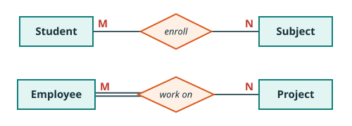
|< ฝั่ง PROJECT (อ่านข้ามเส้นจาก EMPLOYEE) = พนักงานทุกคนต้องทำอย่างน้อย 1 โครงการ — ตรงกับเส้นคู่ฝั่ง Employee ในภาพ Chen2.5.3 ความสัมพันธ์แบบวกกลับ
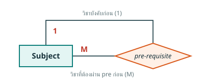
o| = วิชาหนึ่งมีวิชาบังคับก่อนไม่เกิน 1 วิชา (CS001 ไม่มีเลย) · ปลาย o< = วิชาหนึ่งเป็นวิชาบังคับก่อนของวิชาอื่นได้ 0 ถึงหลายวิชา (CS002 → CS005–CS008)2.5.4 แอตทริบิวต์ของความสัมพันธ์
เกรดไม่ใช่คุณสมบัติของนิสิต (นิสิตคนหนึ่งได้หลายเกรด) และไม่ใช่ของรายวิชา (วิชาหนึ่งให้หลายเกรด) จึงต้องเก็บไว้ที่ความสัมพันธ์ — Chen: วาดวงรีติดกับข้าวหลามตัด · Crow's Foot: เส้นไม่มีที่ให้ใส่แอตทริบิวต์ จึงต้องยกความสัมพันธ์ขึ้นเป็นเอนทิตีเชื่อม (Associative Entity) แล้วใส่แอตทริบิวต์ในกล่องนั้น
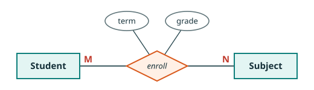
STUDENT ||——o< ENROLL >o——|| SUBJECT และ PK ของ ENROLL = PK ของทั้งสองฝั่ง (sid, subid)แอตทริบิวต์ของความสัมพันธ์ M:N จะกลายเป็นคอลัมน์ในตารางเชื่อม (Junction Table) เสมอ เช่น grade ในตาราง enroll — ภาพ Crow's Foot จึงหน้าตาใกล้ตารางจริงมาก ส่วนภาพ Chen ต้องผ่านขั้นการแปลงในบทที่ 3 ก่อน
จงระบุภาวะความสัมพันธ์ (1:1, 1:M, M:N) พร้อมเหตุผล
- รายวิชา — กลุ่มเรียน (section)
- นิสิต — บัญชีผู้ใช้ระบบ (1 คน 1 บัญชี)
- ลูกค้า — สินค้า (ในการสั่งซื้อ)
- รายวิชา — รายวิชา (วิชาบังคับก่อน ตามกรณีศึกษา)
- 1:M — 1 วิชาเปิดได้หลายกลุ่ม แต่กลุ่มหนึ่งเป็นของวิชาเดียว · Crow's Foot:
SUBJECT ||——o< SECTION - 1:1 · Crow's Foot:
STUDENT ||——o| ACCOUNT(นิสิตบางคนยังไม่เปิดบัญชี) - M:N — ลูกค้าซื้อได้หลายสินค้า สินค้าหนึ่งถูกซื้อโดยหลายลูกค้า · Crow's Foot:
CUSTOMER >o——o< PRODUCTหรือแตกเป็นCUSTOMER ||——o< ORDER_ITEM >o——|| PRODUCT - 1:M แบบวกกลับ — วิชาหนึ่งมีวิชาบังคับก่อนได้ไม่เกิน 1 วิชา แต่วิชาหนึ่งเป็นวิชาบังคับก่อนของหลายวิชาได้ (เช่น CS002 เป็น pre ของ CS005–CS008) · Crow's Foot: เส้นวนกลับ ปลาย
o|และo<
2.6 ขั้นตอนการเขียนแผนภาพ ER จากโจทย์
- ขีดเส้นใต้ คำนาม ที่มีข้อมูลของตัวเอง → มักเป็นเอนทิตี
- คำนามที่เป็นเพียงรายละเอียดของคำนามอื่น → แอตทริบิวต์
- ระบุแอตทริบิวต์คีย์ (ถ้าไม่มี ให้สร้างรหัสใหม่)
- ขีดเส้นใต้ คำกริยา ที่เชื่อมคำนาม → ความสัมพันธ์
- กำหนดภาวะความสัมพันธ์ โดยถามจากทั้งสองฝั่ง — Crow's Foot ใส่ทั้งค่าต่ำสุด (o / |) และค่าสูงสุด (| / ตีนกา) ทุกปลายเส้น
- ตรวจว่ามีข้อมูลที่ต้องเก็บไว้ที่ความสัมพันธ์หรือไม่ — Chen: วงรีติดข้าวหลามตัด · Crow's Foot: แตกเป็นเอนทิตีเชื่อม
- ตรวจเอนทิตีอ่อนแอ และแอตทริบิวต์พหุค่า — Chen: กล่อง/วงรีสองชั้น · Crow's Foot: PK,FK ของเจ้าของ / เอนทิตีใหม่
ตัวอย่างที่ 1 · เก็บข้อมูลนิสิต
โจทย์ เก็บรหัสนิสิต ชื่อ ที่อยู่ (บ้านเลขที่ ถนน ตำบล อำเภอ จังหวัด รหัสไปรษณีย์) และงานอดิเรก โดยนิสิต 1 คนมีงานอดิเรกได้หลายอย่าง
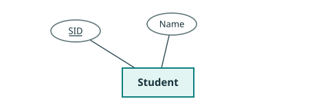
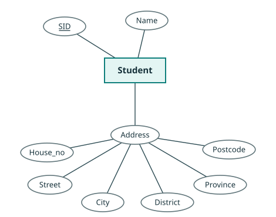
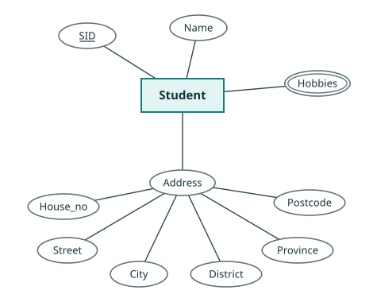
o< ศูนย์ถึงหลายอย่างตัวอย่างที่ 2 · ระบบข้อมูลบุคลากร
โจทย์ เก็บพนักงาน (รหัส ชื่อ เงินเดือน วันเกิด เบอร์โทร) แผนก (รหัส ชื่อ ห้องทำงาน) โครงการ (รหัส ชื่อ งบประมาณ วันเริ่ม วันสิ้นสุด) พนักงานสังกัด 1 แผนก แผนกมีหลายคน แต่ละแผนกมีหัวหน้า 1 คน พนักงานทำได้หลายโครงการ โครงการมีพนักงานหลายคน และต้องเก็บตำแหน่งหน้าที่ในโครงการ
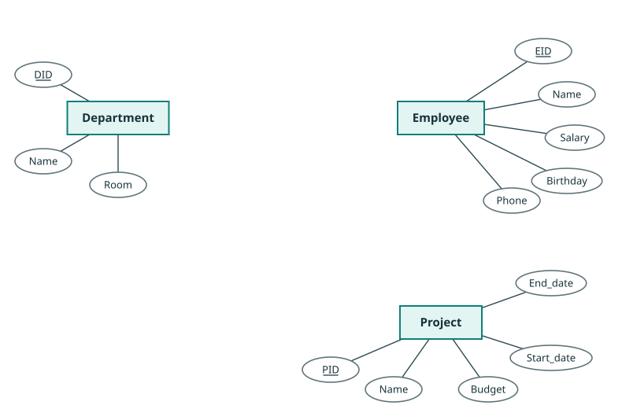
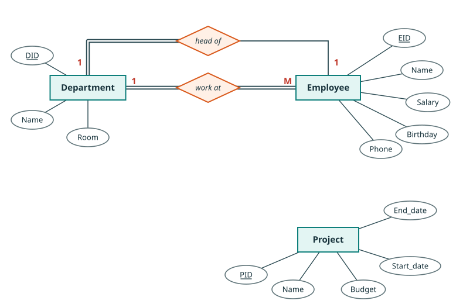
DEPARTMENT ||——|< EMPLOYEE — พนักงานสังกัดหนึ่งแผนกเท่านั้น แผนกมีพนักงานอย่างน้อย 1 คน · head of: EMPLOYEE ||——o| DEPARTMENT — แผนกมีหัวหน้าหนึ่งคนเท่านั้น พนักงานเป็นหัวหน้าได้ไม่เกิน 1 แผนก (ส่วนใหญ่ไม่ได้เป็น)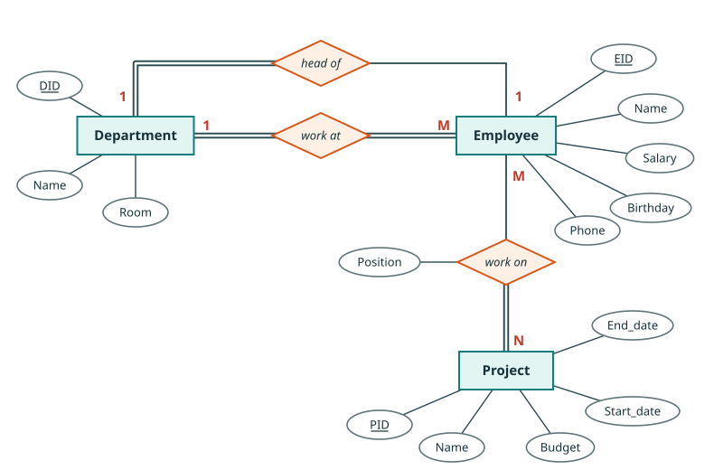
โจทย์ “ห้องสมุดเก็บข้อมูล สมาชิก (รหัส ชื่อ อีเมล) และ หนังสือ (ISBN ชื่อเรื่อง ผู้แต่ง ซึ่งเล่มหนึ่งมีผู้แต่งได้หลายคน) สมาชิกยืมหนังสือได้หลายเล่ม หนังสือเล่มหนึ่งถูกยืมโดยสมาชิกหลายคนในเวลาต่างกัน และต้องเก็บวันที่ยืมและวันที่คืน”
จงระบุ เอนทิตี, คีย์, แอตทริบิวต์พิเศษ, ความสัมพันธ์และภาวะความสัมพันธ์ และแอตทริบิวต์ของความสัมพันธ์
- เอนทิตี: Member (คีย์ member_id), Book (คีย์ ISBN)
- แอตทริบิวต์พิเศษ: ผู้แต่ง (author) เป็น Multivalued → วงรีสองชั้น
- ความสัมพันธ์: Member borrow Book แบบ M:N
- แอตทริบิวต์ของความสัมพันธ์: borrow_date, return_date
Crow's Foot: ผู้แต่ง (พหุค่า) → เอนทิตี BOOK_AUTHOR และ borrow (M:N ที่มีแอตทริบิวต์) → เอนทิตีเชื่อม BORROW
erDiagram
MEMBER ||--o{ BORROW : "ยืม"
BOOK ||--o{ BORROW : "ถูกยืม"
BOOK ||--|{ BOOK_AUTHOR : "เขียนโดย"
BORROW {
varchar member_id PK, FK
varchar isbn PK, FK
date borrow_date PK
date return_date
}borrow_date อยู่ใน PK ด้วย เพราะสมาชิกคนเดิมยืมหนังสือเล่มเดิมซ้ำได้ในเวลาต่างกัน
2.7 กรณีศึกษา: ระบบลงทะเบียนเรียน
กรณีศึกษาหลักที่ใช้ตลอดทั้งเล่ม มีข้อกำหนดดังนี้
- เก็บข้อมูลนิสิต: รหัส ชื่อ สาขา เกรดเฉลี่ยสะสม วันเกิด
- เก็บข้อมูลรายวิชา: รหัส ชื่อ หน่วยกิต สาขาที่รับผิดชอบ และวิชาบังคับก่อน (ไม่เกิน 1 วิชา)
- เก็บข้อมูลอาจารย์: รหัส ชื่อ เงินเดือน สาขา
- รายวิชาหนึ่งเปิดได้หลายกลุ่มเรียนในแต่ละภาคเรียน กลุ่มเรียนหนึ่งมีผู้สอน 1 คน อาจารย์ 1 คนสอนได้หลายกลุ่ม
- นิสิตลงทะเบียนได้หลายกลุ่มเรียน กลุ่มเรียนหนึ่งมีนิสิตหลายคน และต้องเก็บเกรด
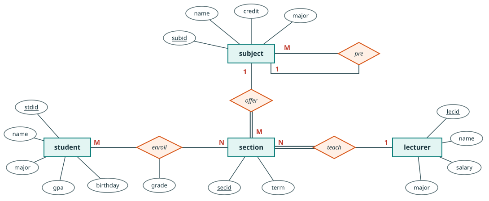
o<) · นิสิต 60014, 60015, 60016, 70035 ยังไม่เคยลงทะเบียน (ฝั่ง ENROLL เป็น o<) · แต่กลุ่มเรียนทุกกลุ่มต้องมีวิชาและผู้สอน (ฝั่ง SUBJECT / LECTURER เป็น ||) — ในภาพ Chen ข้อเท็จจริงเดียวกันนี้แสดงด้วยเส้นคู่ฝั่ง section ที่ offer และ teach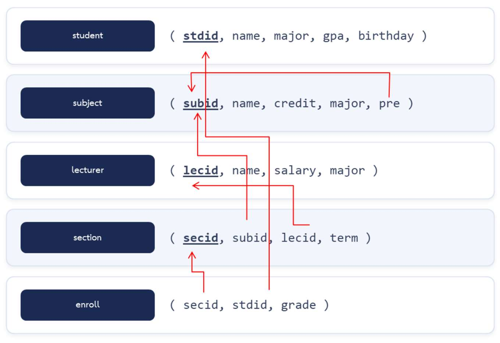
เหตุใดจึงต้องมีเอนทิตีกลุ่มเรียน (SECTION) แทนที่จะให้นิสิตลงทะเบียนกับรายวิชา (SUBJECT) โดยตรง
เพราะรายวิชาเดียวกันเปิดสอนได้หลายครั้ง ต่างภาคเรียน ต่างผู้สอน เช่น CS001 เปิดถึง 7 กลุ่ม (secid 1, 11, 15, 24, 35, 39, 49) ถ้าลงทะเบียนกับรายวิชาตรง ๆ จะไม่รู้ว่านิสิตเรียนภาคไหน กับอาจารย์คนไหน และนิสิตที่สอบตกแล้วลงซ้ำ (เช่น 60010 Gon ลง CS001 ถึง 3 ครั้ง ใน secid 1, 15, 35) จะเก็บไม่ได้เพราะคีย์ซ้ำ
2.8 ข้อผิดพลาดที่พบบ่อยในการเขียนแผนภาพ ER
| ข้อผิดพลาด | ผลกระทบ | แนวทางแก้ไข |
|---|---|---|
| ตั้งชื่อความสัมพันธ์เป็นคำนาม เช่น “การลงทะเบียน” | สับสนกับเอนทิตี | ใช้คำกริยา เช่น “ลงทะเบียน” |
| เก็บค่าที่คำนวณได้เป็นแอตทริบิวต์ปกติ เช่น อายุ | ต้องแก้ทุกปี เสี่ยงไม่สอดคล้อง | เก็บวันเกิด แล้วคำนวณเมื่อใช้ |
| ใช้แอตทริบิวต์ธรรมดาแทนพหุค่า | เก็บได้ค่าเดียว / หลายค่าในช่องเดียว | ใช้วงรีสองชั้น แล้วแยกตารางตอนแปลง |
| ลืมกำหนดภาวะความสัมพันธ์ | แปลงเป็นตารางไม่ได้ ไม่รู้ว่า FK อยู่ฝั่งไหน | ระบุ 1:1, 1:M, M:N ทุกเส้น |
| (Chen) เชื่อมเอนทิตีกันโดยตรงด้วยเส้น | ไม่รู้ว่าสัมพันธ์กันอย่างไร | ต้องมีข้าวหลามตัดคั่นเสมอ |
| สร้างเอนทิตีที่มีแอตทริบิวต์เดียว | ซับซ้อนโดยไม่จำเป็น | ยุบเป็นแอตทริบิวต์ของเอนทิตีอื่น |
| (Crow's Foot) วางสัญลักษณ์ผิดฝั่ง เช่น ตีนกาไว้ฝั่ง LECTURER | ความหมายกลับกัน — กลายเป็นกลุ่มเรียนหนึ่งมีผู้สอนหลายคน | อ่านข้ามเส้นเสมอ: “A 1 ตัว มี B ได้กี่ตัว” → ใส่สัญลักษณ์ที่ปลายฝั่ง B |
| (Crow's Foot) ใส่แค่ค่าสูงสุด ไม่ใส่ค่าต่ำสุด | ไม่รู้ว่าบังคับหรือไม่ → ไม่รู้ว่า FK เป็น NULL ได้ไหม | ทุกปลายเส้นต้องมี 2 สัญลักษณ์ (o / | และ | / ตีนกา) |
| (Crow's Foot) วาด M:N ที่มีแอตทริบิวต์เป็นเส้นตรงเฉย ๆ | แอตทริบิวต์ เช่น grade ไม่มีที่อยู่ | แตกเป็นเอนทิตีเชื่อม แล้วใส่แอตทริบิวต์ในกล่องนั้น |
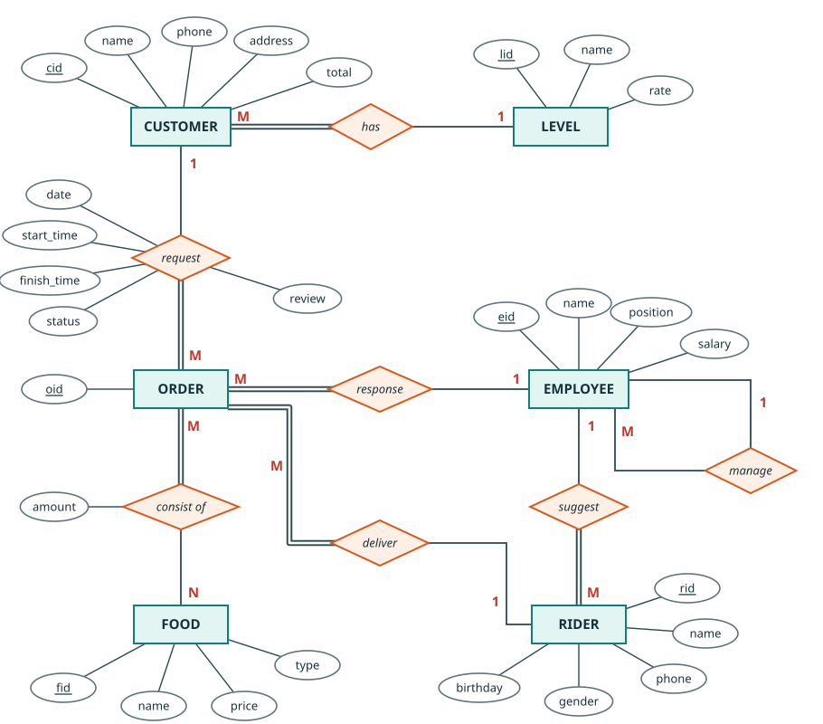
จากภาพที่ 2.30 จงตอบ
(ก) ความสัมพันธ์ใดเป็นแบบวกกลับ
(ข) amount เป็นแอตทริบิวต์ของอะไร และทำไมไม่อยู่ที่ FOOD
(ค) ความสัมพันธ์ consist of เป็นภาวะความสัมพันธ์แบบใด
(ก) manage ของ EMPLOYEE (พนักงานเป็นหัวหน้าพนักงานคนอื่น)
(ข) เป็นแอตทริบิวต์ของความสัมพันธ์ consist of — จำนวนที่สั่งขึ้นกับทั้ง “คำสั่งซื้อใด” และ “อาหารใด” ไม่ใช่คุณสมบัติของอาหารอย่างเดียว
(ค) M:N — คำสั่งซื้อหนึ่งมีหลายอาหาร อาหารหนึ่งอยู่ในหลายคำสั่งซื้อ
ในภาพ Crow's Foot: (ก) เส้นที่วนกลับเข้า EMPLOYEE (manage) (ข) amount อยู่ในกล่อง ORDER_ITEM ซึ่งมี PK = (oid, fid) — เห็นชัดว่าขึ้นกับทั้งคำสั่งซื้อและอาหาร (ค) M:N ถูกแตกเป็น ORDER ||——|< ORDER_ITEM >o——|| FOOD (คำสั่งซื้อต้องมีอาหารอย่างน้อย 1 รายการ)
2.9 สรุปเปรียบเทียบ Chen กับ Crow's Foot และการเขียน ER เป็นข้อความ
สรุปความต่างของสองแบบที่ใช้คู่กันตลอดบท — เนื้อหาเหมือนกันทุกประการ ต่างกันที่ระดับรายละเอียดและความใกล้กับตารางจริง
| ประเด็น | แบบเชน (Chen) | Crow's Foot |
|---|---|---|
| ความสัมพันธ์ | ข้าวหลามตัด | เส้นตรง เขียนชื่อความสัมพันธ์บนเส้น |
| แอตทริบิวต์ | วงรีรอบเอนทิตี | รายการในกล่องเอนทิตี (มักระบุ PK / FK และชนิดข้อมูลด้วย) |
| ภาวะความสัมพันธ์ | ตัวเลข 1, M, N บนเส้น | สัญลักษณ์ปลายเส้น: ขีด = หนึ่ง, ตีนกา = หลาย |
| การมีส่วนร่วม | เส้นเดี่ยว / เส้นคู่ | วงกลม = ไม่บังคับ (0), ขีด = บังคับ (1) |
| M:N ที่มีแอตทริบิวต์ | วงรีติดที่ข้าวหลามตัด | แตกเป็นเอนทิตีเชื่อม (Associative Entity) เช่น ENROLL ที่มี grade |
| เหมาะกับ | ระดับแนวคิด สื่อสารกับผู้ใช้ เรียนหลักการ | ระดับตรรกะ/กายภาพ — ใกล้ตารางจริงมาก แปลงเป็น CREATE TABLE ได้ทันที |
เขียน ER เป็นข้อความ (Diagram as Code)
เครื่องมือสมัยใหม่ให้เขียนแผนภาพเป็นข้อความ แล้ววาดภาพให้อัตโนมัติ เก็บใน Git แก้ไขและเปรียบเทียบเวอร์ชันได้เหมือนโค้ด — เช่น Mermaid (แสดงผลได้ทันทีใน GitHub, Notion, draw.io และ mermaid.live) และ dbdiagram.io — ตัวอย่างกรณีศึกษาด้วย Mermaid:
erDiagram
STUDENT ||--o{ ENROLL : "ลงทะเบียน"
SECTION ||--o{ ENROLL : "มีนิสิต"
SUBJECT ||--o{ SECTION : "เปิดสอนเป็น"
LECTURER ||--o{ SECTION : "สอน"
SUBJECT |o--o{ SUBJECT : "เป็นวิชาบังคับก่อนของ"
ENROLL {
int secid PK, FK
varchar stdid PK, FK
char grade
}สัญลักษณ์ใน Mermaid: || หนึ่งเท่านั้น · |o / o| ศูนย์หรือหนึ่ง · o{ / }o ศูนย์หรือหลาย · |{ / }| หนึ่งหรือหลาย — สัญลักษณ์ด้านซ้ายของ -- เป็นของเอนทิตีซ้าย ด้านขวาเป็นของเอนทิตีขวา
เริ่มคิดด้วยแบบเชนบนกระดาษ แล้วเขียน Mermaid เก็บไว้ใน repository ของโปรเจค — เมื่อแก้ตาราง ก็แก้ข้อความไม่กี่บรรทัด ภาพเปลี่ยนตามทันที และ DBeaver สร้างภาพ ER แบบ Crow's Foot จากตารางจริงให้ได้ (คลิกขวาที่ฐานข้อมูล → View Diagram) ใช้ตรวจว่าตารางที่สร้างตรงกับแบบที่ออกแบบไว้
จากตัวอย่างที่ 2 (ระบบข้อมูลบุคลากร ภาพที่ 2.27) จงเขียน erDiagram แบบ Mermaid ให้มีความสัมพันธ์ work at (พนักงานสังกัด 1 แผนก แผนกมีพนักงานอย่างน้อย 1 คน), head of (แผนกมีหัวหน้า 1 คน พนักงานเป็นหัวหน้าได้ไม่เกิน 1 แผนก) และ work on (M:N พร้อมตำแหน่งในโครงการ)
erDiagram
DEPARTMENT ||--|{ EMPLOYEE : "work at"
EMPLOYEE ||--o| DEPARTMENT : "head of"
EMPLOYEE ||--o{ WORK_ON : "ทำ"
PROJECT ||--o{ WORK_ON : "มีผู้ร่วมงาน"
WORK_ON {
varchar eid PK, FK
varchar pid PK, FK
varchar position
}- work at:
DEPARTMENT ||--|{ EMPLOYEE— พนักงานมีแผนก “หนึ่งเท่านั้น” แผนกมีพนักงาน “หนึ่งหรือหลาย” - head of:
EMPLOYEE ||--o| DEPARTMENT— แผนกมีหัวหน้า “หนึ่งเท่านั้น” พนักงานเป็นหัวหน้า “ศูนย์หรือหนึ่ง” แผนก - work on เป็น M:N ที่มีแอตทริบิวต์ position จึงแตกเป็นเอนทิตีเชื่อม WORK_ON — ตรงกับตาราง work_on ที่จะได้จากการแปลงในบทที่ 3
คำถามท้ายบท
- สัญลักษณ์และองค์ประกอบ
- จงวาดสัญลักษณ์ของ Entity, Weak Entity, Key Attribute, Multivalued Attribute, Derived Attribute และ Relationship ทั้งแบบเชนและแบบ Crow's Foot (ตารางสัญลักษณ์ หัวข้อ 2.2)
- Entity — Chen: สี่เหลี่ยมผืนผ้า · Crow's Foot: กล่องมีแถบหัวเป็นชื่อ และรายการแอตทริบิวต์ข้างใน
- Weak Entity — Chen: สี่เหลี่ยมผืนผ้าเส้นคู่ (ความสัมพันธ์ที่ระบุตัวตนเป็นข้าวหลามตัดเส้นคู่) · Crow's Foot: กล่องปกติ แต่ PK รวมคีย์ของเจ้าของ (
PK,FK) - Key Attribute — Chen: วงรีที่ขีดเส้นใต้ชื่อ · Crow's Foot:
PKหน้าชื่อ - Multivalued Attribute — Chen: วงรีเส้นคู่ · Crow's Foot: แยกเป็นเอนทิตีใหม่ เชื่อมแบบ 1:M
- Derived Attribute — Chen: วงรีเส้นประ · Crow's Foot:
/นำหน้าชื่อ หรือไม่วาด - Relationship — Chen: รูปข้าวหลามตัด · Crow's Foot: เส้นตรงเขียนชื่อบนเส้น พร้อมสัญลักษณ์ปลายเส้นทั้งสองด้าน
- จงอธิบายความแตกต่างระหว่างเอนทิตีปกติกับเอนทิตีอ่อนแอ พร้อมยกตัวอย่างที่ไม่ซ้ำกับในเอกสาร 2 ตัวอย่าง และบอกว่าใน Crow's Foot สังเกตเอนทิตีอ่อนแอได้อย่างไร (ลบเจ้าของแล้วยังมีความหมายไหม)
เอนทิตีปกติ มีคีย์ของตัวเอง ระบุตัวตนได้โดยลำพัง ส่วนเอนทิตีอ่อนแอไม่มีคีย์ของตัวเอง ต้องอาศัยคีย์ของเอนทิตีเจ้าของร่วมกับ Partial Key และถ้าลบเจ้าของ เอนทิตีอ่อนแอจะไม่มีความหมาย
ตัวอย่าง: (1) ชั้นของอาคาร (ชั้น 1, ชั้น 2 มีทุกอาคาร) เจ้าของคือ อาคาร (2) งวดการผ่อนชำระ (งวดที่ 1, 2, …) เจ้าของคือ สัญญาเงินกู้ (3) บุตรของพนักงาน สำหรับสวัสดิการ เจ้าของคือ พนักงาน
Crow's Foot ไม่มีกล่องสองชั้น — สังเกตจาก PK ที่มีคีย์ของเจ้าของรวมอยู่ เช่น FLOOR(PK,FK building_id, PK floor_no) และเส้น
BUILDING ||——|< FLOOR - จงจำแนกประเภทแอตทริบิวต์: เลขบัตรประชาชน, ที่อยู่, อายุ, ความสามารถพิเศษ, วันเกิด, ชื่อ-สกุล, เบอร์โทร (มีหลายเบอร์) และบอกว่าแต่ละตัววาดใน Crow's Foot อย่างไร (Key / Composite / Derived / Multivalued)
เลขบัตรประชาชน = Key (Simple) · ที่อยู่ = Composite (บ้านเลขที่ ถนน จังหวัด รหัสไปรษณีย์) · อายุ = Derived (คำนวณจากวันเกิด) · ความสามารถพิเศษ = Multivalued · วันเกิด = Simple · ชื่อ-สกุล = Composite (ชื่อ + นามสกุล) · เบอร์โทรหลายเบอร์ = Multivalued
Crow's Foot: เลขบัตรประชาชน = แถว
PK(หรือแถวธรรมดาถ้าเลือกรหัสอื่นเป็น PK) · ที่อยู่และชื่อ-สกุล = แตกเป็นหลายแถว · อายุ =/age· วันเกิด = 1 แถว · ความสามารถพิเศษและเบอร์โทร = เอนทิตีใหม่ เช่น PERSON_PHONE(PK,FK citizen_id, PK phone) - ตำแหน่งพนักงาน (leader, programmer, SA, HR) ควรเป็นเอนทิตี แอตทริบิวต์ หรือค่าของแอตทริบิวต์ เพราะเหตุใด (ค่าที่เป็นไปได้ ≠ attribute)
leader, programmer, SA, HR เป็นค่าของแอตทริบิวต์ position ของเอนทิตี Employee ไม่ใช่แอตทริบิวต์แยกกัน 4 ตัว (Chen: ไม่ควรวาดวงรี leader, programmer, … · Crow's Foot: ไม่ควรมีแถว leader, programmer, … ในกล่อง — มีแถว position แถวเดียว) — แต่ถ้าต้องเก็บข้อมูลของตำแหน่งเพิ่ม เช่น เงินเดือนขั้นต่ำ หน้าที่ ก็ควรยกเป็นเอนทิตี Position แยก
- เหตุใดจึงไม่ควรเก็บ “อายุ” เป็นแอตทริบิวต์ปกติ และควรแสดงในแผนภาพอย่างไร (Derived — วงรีเส้นประ / “/age”)
อายุเปลี่ยนทุกวันตามเวลา ถ้าเก็บไว้ต้องคอยแก้ตลอด และอาจขัดกับวันเกิด (ไม่สอดคล้อง) ควรเก็บวันเกิดแล้วคำนวณอายุเมื่อต้องการ — Chen: วงรีเส้นประ · Crow's Foot: แถว
/age(หรือไม่วาด) - เหตุใดเกรดจึงต้องเป็นแอตทริบิวต์ของความสัมพันธ์ enroll ไม่ใช่ของ student หรือ subject และในแบบ Crow's Foot เกรดอยู่ที่ใด (ขึ้นกับทั้งสองฝั่ง)
เกรดขึ้นกับทั้งนิสิตและกลุ่มเรียนพร้อมกัน — นิสิตคนเดียวมีหลายเกรด (หลายวิชา) และวิชาเดียวมีหลายเกรด (หลายคน) ถ้าเก็บที่ student จะรู้ไม่ได้ว่าเป็นเกรดวิชาใด ถ้าเก็บที่ subject จะรู้ไม่ได้ว่าเป็นของใคร จึงเป็นแอตทริบิวต์ของความสัมพันธ์ M:N
Crow's Foot: เส้นไม่มีที่วางแอตทริบิวต์ ความสัมพันธ์ enroll จึงกลายเป็นเอนทิตีเชื่อม ENROLL(PK,FK secid, PK,FK stdid, grade) แล้วเกรดอยู่ในกล่องนั้น
- ภาวะความสัมพันธ์
- จงระบุภาวะความสัมพันธ์ และเขียนเป็นสัญลักษณ์ Crow's Foot: พนักงาน–ที่จอดรถ (1 คน 1 ช่อง), สาขาวิชา–นิสิต, อาจารย์–วิชา (สอน), นิสิต–วิชา (ลงทะเบียน) (ถามทั้งสองฝั่ง ทั้งค่าสูงสุดและต่ำสุด)
- พนักงาน–ที่จอดรถ = 1:1 ·
EMPLOYEE ||——o| PARKING(พนักงานบางคนไม่มีที่จอด ที่จอดแต่ละช่องเป็นของพนักงานคนเดียว) - สาขาวิชา–นิสิต = 1:M (สาขาหนึ่งมีนิสิตหลายคน นิสิตสังกัดสาขาเดียว) ·
MAJOR ||——o< STUDENT - อาจารย์–วิชา = M:N ·
LECTURER >o——o< SUBJECT - นิสิต–วิชา = M:N ·
STUDENT >o——o< SUBJECT(ถ้ามีเกรดต้องแตกเป็นเอนทิตีเชื่อม)
- พนักงาน–ที่จอดรถ = 1:1 ·
- จงระบุภาวะความสัมพันธ์ และเขียนเป็นสัญลักษณ์ Crow's Foot: ประเทศ–เมืองหลวง, ผู้ป่วย–แพทย์ (การนัดตรวจ), ลูกค้า–ใบสั่งซื้อ, ใบสั่งซื้อ–สินค้า (1:1 / 1:M / M:N)
- ประเทศ–เมืองหลวง = 1:1 ·
COUNTRY ||——|| CAPITAL(บังคับทั้งสองฝั่ง) - ผู้ป่วย–แพทย์ = M:N (มีแอตทริบิวต์วันเวลานัด) · แตกเป็น
PATIENT ||——o< APPOINTMENT >o——|| DOCTOR - ลูกค้า–ใบสั่งซื้อ = 1:M ·
CUSTOMER ||——o< ORDERS - ใบสั่งซื้อ–สินค้า = M:N (มีแอตทริบิวต์จำนวนและราคา) · แตกเป็น
ORDERS ||——|< ORDER_ITEM >o——|| PRODUCT
- ประเทศ–เมืองหลวง = 1:1 ·
- ความสัมพันธ์ Person has email (คนหนึ่งมีหลายอีเมล) ควรเขียนเป็นเอนทิตีแยก หรือเป็นแอตทริบิวต์พหุค่า เปรียบเทียบข้อดีข้อเสีย (Multivalued vs Entity)
แอตทริบิวต์พหุค่า (Chen) — แผนภาพเรียบง่าย เหมาะเมื่อเก็บเพียงที่อยู่อีเมล · เอนทิตีแยก — เหมาะเมื่ออีเมลมีข้อมูลประกอบ เช่น ประเภท (งาน/ส่วนตัว) วันยืนยัน อีเมลหลัก หรือมีความสัมพันธ์กับเอนทิตีอื่น แต่แผนภาพซับซ้อนกว่า
ใน Crow's Foot ไม่มีทางเลือกแรก — วาดเป็นเอนทิตีแยกเสมอ
PERSON ||——o< PERSON_EMAILและเมื่อแปลงเป็นตาราง ทั้งสองแบบได้person_email(person_id, email)เหมือนกัน - จงยกตัวอย่างความสัมพันธ์แบบวกกลับ 3 ตัวอย่าง พร้อมระบุภาวะความสัมพันธ์และสัญลักษณ์ปลายเส้น Crow's Foot (supervise, pre, married to)
- Employee supervise Employee — 1:M · ปลาย
o|(มีหัวหน้าไม่เกิน 1) และo<(มีลูกน้อง 0 ถึงหลายคน) - Subject is prerequisite of Subject — 1:M (ในกรณีศึกษา 1 วิชามี pre ได้ 1 วิชา) · ปลาย
o|และo< - Person married to Person — 1:1 · ปลาย
o|ทั้งสองด้าน (โสดก็ได้) - Member refers Member (ผู้แนะนำสมาชิก) — 1:M · ปลาย
o|และo<
- Employee supervise Employee — 1:M · ปลาย
- จงยกตัวอย่างความสัมพันธ์ระดับสาม (Ternary) 1 ตัวอย่าง และแสดงวิธีแปลงเป็นความสัมพันธ์ระดับสองหลายชุด (เอนทิตีกลาง)
ตัวอย่าง: Lecturer–Subject–Room ผ่านความสัมพันธ์ teach (อาจารย์สอนวิชาใดในห้องใด) แปลงโดยยกความสัมพันธ์เป็นเอนทิตีกลาง Class (หรือ section) แล้วสร้างความสัมพันธ์ระดับสอง 3 ชุด: Lecturer 1:M Class, Subject 1:M Class, Room 1:M Class — ตรงกับที่กรณีศึกษาใช้เอนทิตี SECTION
Crow's Foot วาดข้าวหลามตัดสามขาไม่ได้อยู่แล้ว จึงเขียนเป็นเอนทิตีกลางตั้งแต่แรก:
Crow's Foot (Mermaid)erDiagram LECTURER ||--o{ CLASS : "สอน" SUBJECT ||--o{ CLASS : "เปิดเป็น" ROOM ||--o{ CLASS : "ใช้" - เขียนแผนภาพ ER จากโจทย์ (ทั้ง Chen และ Crow's Foot)
- Employee เก็บรหัสพนักงาน ชื่อ ที่อยู่ เบอร์โทร เพศ วันเกิด และตำแหน่ง พนักงานมีเบอร์โทรได้หลายเบอร์แต่ห้ามซ้ำ ตำแหน่งมี 4 แบบ คือ หัวหน้าแผนก โปรแกรมเมอร์ เลขา และเจ้าหน้าที่ทั่วไป จงเขียน ER (phone = Multivalued)
Chen: เอนทิตีเดียว EMPLOYEE แอตทริบิวต์: emp_id (Key), name, address (อาจเป็น Composite), phone (Multivalued — วงรีเส้นคู่), gender, birthday, position (Simple — ค่าเป็นหนึ่งใน 4 ตำแหน่ง ไม่ต้องวาดแยก) และอาจเพิ่ม age เป็น Derived
Crow's Foot: phone ยกเป็นเอนทิตี EMPLOYEE_PHONE — “ห้ามซ้ำ” บังคับด้วย PK (emp_id, phone)
Crow's Foot (Mermaid)erDiagram EMPLOYEE ||--o{ EMPLOYEE_PHONE : "มี" EMPLOYEE { varchar emp_id PK varchar name varchar address char gender date birthday varchar position } EMPLOYEE_PHONE { varchar emp_id PK, FK varchar phone PK } - โรงภาพยนตร์ มี 3 โรง (VIP, Honeymoon, BigHall) แต่ละโรงมีที่นั่ง A1, A2, …, B1, … ราคาไม่เท่ากัน เก็บจำนวนที่นั่ง ขนาดโรง (กว้าง×ยาว) และขนาดจอ จงเขียน ER และระบุเอนทิตีอ่อนแอ (Seat = Weak Entity, size = Composite)
- THEATER: theater_name, n_seat (อาจเป็น Derived จากจำนวน SEAT), size (Composite: width, length), screen_size
- SEAT (Weak Entity): seat_no เป็น Partial Key (ขีดเส้นใต้เส้นประ), price
- Chen: ความสัมพันธ์ has (Identifying, ข้าวหลามตัดเส้นคู่) THEATER 1:M SEAT — SEAT มีส่วนร่วมแบบบังคับ (Total)
SEAT เป็นเอนทิตีอ่อนแอ เพราะที่นั่ง A1 มีในทุกโรง ต้องใช้ชื่อโรง + เลขที่นั่งจึงระบุได้ — ใน Crow's Foot เห็นได้จาก PK ของ SEAT ที่มี theater_name อยู่ด้วย และ size (Composite) แตกเป็น width, length
Crow's Foot (Mermaid)erDiagram THEATER ||--|{ SEAT : "has" THEATER { varchar theater_name PK int width int length decimal screen_size int n_seat "derived" } SEAT { varchar theater_name PK, FK varchar seat_no PK decimal price } - AmICrazy Software House เก็บพนักงาน (รหัส ชื่อ เงินเดือน แผนก หัวหน้า) ลูกค้า (รหัส ชื่อ เบอร์โทร) ที่จ้างทำโปรเจคได้หลายครั้ง การประชุมลูกค้า–พนักงาน (วัน สถานที่) โปรเจค (รหัส ชื่อ งบ วันเริ่ม ระยะเวลา ≤ 100 วัน วันเสร็จจริง) พนักงานหลายคนทำโปรเจคเดียวโดยมีหน้าที่ต่างกัน และการลา (ประเภท วันที่ จำนวนวัน ≤ 5) จงเขียน ER (6 เอนทิตี + supervise วกกลับ)
- เอนทิตี: EMPLOYEE(emp_id, name, salary) · DEPARTMENT(dept_id, name) · CUSTOMER(cus_id, name, phone {Multivalued}) · PROJECT(proj_id, name, budget, start_date, duration, finish_date) · LEAVE(Weak ของ EMPLOYEE: leave_date, type, days)
- EMPLOYEE work in DEPARTMENT — M:1
- EMPLOYEE supervise EMPLOYEE — วกกลับ 1:M
- CUSTOMER hire PROJECT — 1:M
- CUSTOMER meet EMPLOYEE — M:N แอตทริบิวต์ meet_date, place
- EMPLOYEE work on PROJECT — M:N แอตทริบิวต์ role
- EMPLOYEE request LEAVE — 1:M (Identifying)
ข้อกำหนด duration ≤ 100 และ days ≤ 5 เขียนเป็นหมายเหตุบนแผนภาพ แล้วบังคับด้วย CHECK ตอนสร้างตาราง
Crow's Foot: M:N ที่มีแอตทริบิวต์ 2 ชุด (meet, work on) กลายเป็นเอนทิตีเชื่อม MEETING และ WORK_ON · phone (พหุค่า) กลายเป็น CUSTOMER_PHONE · LEAVE มี PK = (emp_id, leave_date)
Crow's Foot (Mermaid)erDiagram DEPARTMENT ||--o{ EMPLOYEE : "work in" EMPLOYEE |o--o{ EMPLOYEE : "supervise" CUSTOMER ||--o{ CUSTOMER_PHONE : "มี" CUSTOMER ||--o{ PROJECT : "hire" CUSTOMER ||--o{ MEETING : "meet" EMPLOYEE ||--o{ MEETING : "meet" EMPLOYEE ||--o{ WORK_ON : "work on" PROJECT ||--|{ WORK_ON : "มีผู้ร่วมงาน" EMPLOYEE ||--o{ LEAVE : "request" MEETING { varchar cus_id PK, FK varchar emp_id PK, FK date meet_date PK varchar place } WORK_ON { varchar emp_id PK, FK varchar proj_id PK, FK varchar role } LEAVE { varchar emp_id PK, FK date leave_date PK varchar type int days "<= 5" } - คณะวิทยาการสารสนเทศ มี 5 สาขา (CS, MIS, NMD, IS, MC) นิสิตปี 4 ทำโปรเจคเดี่ยวหรือคู่ มีที่ปรึกษาและอาจมีที่ปรึกษาร่วม (ต่างสาขาได้) สอบ proposal, project#1, project#2 เก็บวันสอบ ประเภท ผล กรรมการ 2 คน สถานะ เทอมเริ่ม/เสร็จ และ keyword หลายคำ จงเขียน ER (supervise มีแอตทริบิวต์ position)
- เอนทิตี: MAJOR(major_id, name) · STUDENT(std_id, name) · LECTURER(lec_id, name) · PROJECT(proj_id, title, status, start_term, finish_term, keyword {Multivalued}) · PRESENTATION(Weak ของ PROJECT: exam_type, exam_date, result)
- STUDENT/LECTURER belong to MAJOR — M:1
- STUDENT do PROJECT — M:1 (โปรเจคมีนิสิต 1–2 คน)
- LECTURER supervise PROJECT — M:N แอตทริบิวต์ position (ที่ปรึกษาหลัก / ร่วม)
- PROJECT has PRESENTATION — 1:M (Identifying)
- LECTURER is committee of PRESENTATION — M:N (ครั้งละ 2 คน)
Crow's Foot: โปรเจคมีนิสิต 1–2 คน → ปลาย
|{ฝั่ง STUDENT (ค่าสูงสุด 2 เขียนเป็นหมายเหตุ เพราะสัญลักษณ์บอกได้แค่ “หลาย”)Crow's Foot (Mermaid)erDiagram MAJOR ||--o{ STUDENT : "belong to" MAJOR ||--o{ LECTURER : "belong to" PROJECT ||--|{ STUDENT : "do (1-2 คน)" PROJECT ||--o{ PROJECT_KEYWORD : "มี" LECTURER ||--o{ SUPERVISE : "supervise" PROJECT ||--|{ SUPERVISE : "มีที่ปรึกษา" PROJECT ||--o{ PRESENTATION : "has" PRESENTATION ||--|{ COMMITTEE : "มีกรรมการ (2 คน)" LECTURER ||--o{ COMMITTEE : "เป็นกรรมการ" SUPERVISE { varchar lec_id PK, FK varchar proj_id PK, FK varchar position "หลัก/ร่วม" } PRESENTATION { varchar proj_id PK, FK varchar exam_type PK date exam_date varchar result } - ระบบห้องสมุด เก็บสมาชิก หนังสือ (มีผู้แต่งหลายคน) หมวดหมู่ และการยืม-คืน (วันยืม วันกำหนดคืน วันคืนจริง ค่าปรับ) จงเขียน ER (borrow = M:N)
- เอนทิตี: MEMBER(member_id, name, phone, status) · BOOK(book_id, title, author {Multivalued} หรือเอนทิตี AUTHOR แยก, copies) · CATEGORY(cat_id, name)
- BOOK belong to CATEGORY — M:1
- MEMBER borrow BOOK — M:N แอตทริบิวต์ borrow_date, due_date, return_date, fine
- (ถ้ายกผู้แต่งเป็นเอนทิตี) BOOK written by AUTHOR — M:N
Crow's Foot (Mermaid)erDiagram CATEGORY ||--o{ BOOK : "belong to" MEMBER ||--o{ BORROW : "ยืม" BOOK ||--o{ BORROW : "ถูกยืม" BOOK ||--|{ BOOK_AUTHOR : "written by" AUTHOR ||--o{ BOOK_AUTHOR : "เขียน" BORROW { varchar member_id PK, FK varchar book_id PK, FK date borrow_date PK date due_date date return_date decimal fine } - คลินิก เก็บผู้ป่วย แพทย์ (แพทย์มีความเชี่ยวชาญหลายด้าน) การนัดหมาย (วัน เวลา อาการ) และยาที่จ่ายในแต่ละการนัด (ชื่อยา จำนวน) จงเขียน ER (การนัด–ยา = M:N + amount)
- เอนทิตี: PATIENT(patient_id, name, birthday) · DOCTOR(doctor_id, name, specialty {Multivalued}) · APPOINTMENT(appt_id, appt_date, appt_time, symptom) · MEDICINE(med_id, name)
- PATIENT make APPOINTMENT — 1:M · DOCTOR attend APPOINTMENT — 1:M
- APPOINTMENT prescribe MEDICINE — M:N แอตทริบิวต์ amount
Crow's Foot (Mermaid)erDiagram PATIENT ||--o{ APPOINTMENT : "make" DOCTOR ||--o{ APPOINTMENT : "attend" DOCTOR ||--|{ DOCTOR_SPECIALTY : "มีความเชี่ยวชาญ" APPOINTMENT ||--o{ PRESCRIPTION : "prescribe" MEDICINE ||--o{ PRESCRIPTION : "ถูกจ่าย" PRESCRIPTION { int appt_id PK, FK varchar med_id PK, FK int amount } - ร้านกาแฟ เก็บเมนู (ราคาตามขนาด S/M/L) ลูกค้าสมาชิก (สะสมแต้ม) ใบเสร็จ และรายการในใบเสร็จ จงเขียน ER และอธิบายว่ารายการในใบเสร็จเป็นเอนทิตีอ่อนแอหรือไม่ (Weak Entity ของใบเสร็จ)
- เอนทิตี: MENU(menu_id, name) · MENU_PRICE(Weak ของ MENU: size เป็น Partial Key, price) · MEMBER(member_id, name, points) · RECEIPT(receipt_no, receipt_time, total {Derived}) · RECEIPT_ITEM(Weak ของ RECEIPT: line_no, qty, unit_price)
- MEMBER pay RECEIPT — 1:M (ลูกค้าทั่วไปไม่ต้องมีสมาชิก = Partial)
- RECEIPT contains RECEIPT_ITEM — 1:M (Identifying) · RECEIPT_ITEM of MENU_PRICE — M:1
รายการในใบเสร็จเป็นเอนทิตีอ่อนแอ — “รายการที่ 1” มีในทุกใบเสร็จ ต้องใช้เลขที่ใบเสร็จ + ลำดับรายการจึงระบุได้ และถ้าลบใบเสร็จ รายการก็ไม่มีความหมาย
Crow's Foot: ความเป็นเอนทิตีอ่อนแอเห็นจาก PK ของ RECEIPT_ITEM = (receipt_no, line_no) · ลูกค้าทั่วไปไม่ต้องเป็นสมาชิก จึงเป็น
|oฝั่ง MEMBER (ใบเสร็จมีสมาชิกได้ 0 หรือ 1 คน)Crow's Foot (Mermaid)erDiagram MENU ||--|{ MENU_PRICE : "มีราคาตามขนาด" MEMBER |o--o{ RECEIPT : "pay" RECEIPT ||--|{ RECEIPT_ITEM : "contains" MENU_PRICE ||--o{ RECEIPT_ITEM : "of" MENU_PRICE { varchar menu_id PK, FK char size PK "S/M/L" decimal price } RECEIPT_ITEM { varchar receipt_no PK, FK int line_no PK int qty decimal unit_price } - วิเคราะห์และตรวจแผนภาพ
- จากแผนภาพ ER ของกรณีศึกษา (ภาพที่ 2.28) เหตุใดจึงต้องมีเอนทิตี SECTION แทนที่จะให้นิสิตลงทะเบียนกับ SUBJECT โดยตรง (เปิดหลายครั้ง ต่างเทอม ต่างผู้สอน)
วิชาเดียวเปิดสอนได้หลายครั้ง หลายภาคเรียน และหลายผู้สอน ถ้าให้นิสิตลงทะเบียนกับ SUBJECT โดยตรงจะไม่รู้ว่าเรียนเทอมไหน กับอาจารย์คนใด และนิสิตจะลงวิชาเดิมซ้ำ (เช่น เรียนซ้ำหลังได้ F) ไม่ได้ เพราะคู่ (นิสิต, วิชา) ซ้ำ SECTION ทำให้ “การเปิดสอนแต่ละครั้ง” มีตัวตน
เฉลยSELECT subid, COUNT(*) AS n_open, COUNT(DISTINCT lecid) AS n_lecturer, COUNT(DISTINCT term) AS n_term FROM section GROUP BY subid ORDER BY n_open DESC;
▸ ผลลัพธ์ (แสดง 5 จาก 17 แถว)subid n_open n_lecturer n_term CS001 7 3 6 CS002 7 6 4 CS004 7 3 5 CS009 4 3 4 MA001 4 4 4 - จากภาพที่ 2.30 ระบบสั่งอาหารออนไลน์ จงระบุเอนทิตีทั้งหมด ความสัมพันธ์ทั้งหมด และภาวะความสัมพันธ์ของแต่ละความสัมพันธ์ แล้วเทียบกับภาพ Crow's Foot ข้างภาพที่ 2.30 (order–food = M:N)
เอนทิตี 6 ตัว: CUSTOMER, LEVEL, ORDER, FOOD, EMPLOYEE, RIDER (ภาพ Crow's Foot มี ORDER_ITEM เพิ่มเป็นตัวที่ 7 — มาจาก consist of)
- CUSTOMER has LEVEL — M:1 (ลูกค้าหลายคนอยู่ระดับเดียวกัน) ·
CUSTOMER >o——|| LEVEL - CUSTOMER request ORDER — 1:M แอตทริบิวต์ date, start_time, finish_time, status, review · Crow's Foot ย้ายแอตทริบิวต์เหล่านี้ไปอยู่ใน ORDER (ฝั่ง “หลาย”)
- ORDER consist of FOOD — M:N แอตทริบิวต์ amount · Crow's Foot:
ORDER ||——|< ORDER_ITEM >o——|| FOOD - EMPLOYEE response ORDER — 1:M (พนักงานหนึ่งคนรับผิดชอบหลายคำสั่งซื้อ) ·
EMPLOYEE ||——o< ORDER - RIDER deliver ORDER — 1:M ·
RIDER ||——o< ORDER - EMPLOYEE suggest RIDER — 1:M (พนักงานแนะนำไรเดอร์เข้าทำงาน) ·
EMPLOYEE ||——o< RIDER - EMPLOYEE manage EMPLOYEE — วกกลับ 1:M · ปลาย
o|และo<
- CUSTOMER has LEVEL — M:1 (ลูกค้าหลายคนอยู่ระดับเดียวกัน) ·
- จงตรวจแผนภาพ ER ของเพื่อนในโจทย์ AmICrazy โดยใช้ตารางข้อผิดพลาดหัวข้อ 2.8 เป็นเกณฑ์ แล้วเสนอแนวทางแก้ไข (ชื่อความสัมพันธ์ = คำกริยา)
คำตอบขึ้นกับแผนภาพของเพื่อน ประเด็นที่ควรตรวจ:
- ชื่อเอนทิตีเป็นคำนามเอกพจน์ ชื่อความสัมพันธ์เป็นคำกริยา
- ทุกเอนทิตีมีคีย์ (ยกเว้นเอนทิตีอ่อนแอที่มี Partial Key)
- ไม่ใส่ FK เป็นแอตทริบิวต์ในแผนภาพ ER ระดับแนวคิด (ความสัมพันธ์แสดงด้วยเส้น) — ยกเว้น PK,FK ในเอนทิตีเชื่อม/อ่อนแอของ Crow's Foot
- ภาวะความสัมพันธ์ระบุครบทั้งสองฝั่ง และแอตทริบิวต์ของ M:N (role, meeting date) อยู่ที่ความสัมพันธ์ (Chen) หรือในเอนทิตีเชื่อม (Crow's Foot)
- (Crow's Foot) ทุกปลายเส้นมีทั้งค่าต่ำสุดและค่าสูงสุด และตีนกาอยู่ฝั่งที่ถูกต้อง
- ไม่วาดค่าของแอตทริบิวต์ (เช่น ประเภทการลา) เป็นแอตทริบิวต์แยก
- อ่านและแปลงระหว่าง Chen กับ Crow's Foot
- จากแผนภาพ `LECTURER (——o< SECTION` จงอ่านความหมายทั้งสองทิศทาง และบอกว่าสัญลักษณ์ใดตรงกับ Total Participation ในแบบเชน || อ่านข้ามเส้นไปปลายฝั่งตรงข้าม)
อาจารย์ 1 คนสอนกลุ่มเรียนได้ ศูนย์หรือหลายกลุ่ม (o< ที่ฝั่ง SECTION) และกลุ่มเรียน 1 กลุ่มมีผู้สอน หนึ่งคนเท่านั้น (|| ที่ฝั่ง LECTURER)
ขีดด้านนอก (ค่าต่ำสุด = 1) ตรงกับ Total Participation (เส้นคู่) — ในที่นี้ SECTION ทุกกลุ่มต้องมีผู้สอน ส่วนวงกลม (ค่าต่ำสุด = 0) ตรงกับ Partial — อาจารย์บางคนไม่ได้สอน · ระวังตำแหน่ง: ขีดของ Crow's Foot อยู่ฝั่ง LECTURER แต่เส้นคู่ของ Chen อยู่ฝั่ง SECTION (เส้นระหว่าง SECTION กับ ◇teach) เพราะ Crow's Foot อ่านข้ามเส้น
- จงแปลงแผนภาพแบบเชนต่อไปนี้เป็น Crow's Foot: นิสิต (รหัส ชื่อ ทักษะหลายค่า) ลงทะเบียน กลุ่มเรียน แบบ M:N โดยความสัมพันธ์มีแอตทริบิวต์ grade และนิสิตทุกคนต้องลงอย่างน้อย 1 กลุ่ม (Total) (พหุค่า → เอนทิตี, M:N + แอตทริบิวต์ → เอนทิตีเชื่อม)
- ทักษะ (วงรีสองชั้น) → เอนทิตี STUDENT_SKILL เชื่อม
STUDENT ||——o< STUDENT_SKILL - ลงทะเบียน (ข้าวหลามตัด + grade) → เอนทิตีเชื่อม ENROLL(PK,FK stdid, PK,FK secid, grade)
- นิสิตต้องลงอย่างน้อย 1 กลุ่ม (เส้นคู่ฝั่งนิสิต) → ปลายฝั่ง ENROLL เป็น
|<ไม่ใช่o<
Crow's Foot (Mermaid)erDiagram STUDENT ||--o{ STUDENT_SKILL : "มี" STUDENT ||--|{ ENROLL : "ลงทะเบียน" SECTION ||--o{ ENROLL : "มีนิสิต" - ทักษะ (วงรีสองชั้น) → เอนทิตี STUDENT_SKILL เชื่อม
- จงเขียนความสัมพันธ์ต่อไปนี้ด้วยสัญลักษณ์ Mermaid:
(ก) ลูกค้ามีใบสั่งซื้อได้หลายใบหรือยังไม่มีเลย ใบสั่งซื้อต้องเป็นของลูกค้า 1 คน
(ข) พนักงานใช้ที่จอดรถได้ไม่เกิน 1 ช่อง ที่จอดรถแต่ละช่องเป็นของพนักงาน 1 คนเสมอ
(ค) ใบสั่งซื้อมีสินค้าอย่างน้อย 1 รายการ (||--o{ / ||--o| / ||--|{)- (ก)
CUSTOMER ||--o{ ORDERS : "สั่งซื้อ" - (ข)
EMPLOYEE ||--o| PARKING : "ใช้" - (ค)
ORDERS ||--|{ ORDER_ITEM : "ประกอบด้วย"— M:N ระหว่างใบสั่งซื้อกับสินค้าแตกเป็นเอนทิตีเชื่อม ORDER_ITEM แล้วเพิ่มPRODUCT ||--o{ ORDER_ITEM : "ถูกสั่ง"
- (ก)